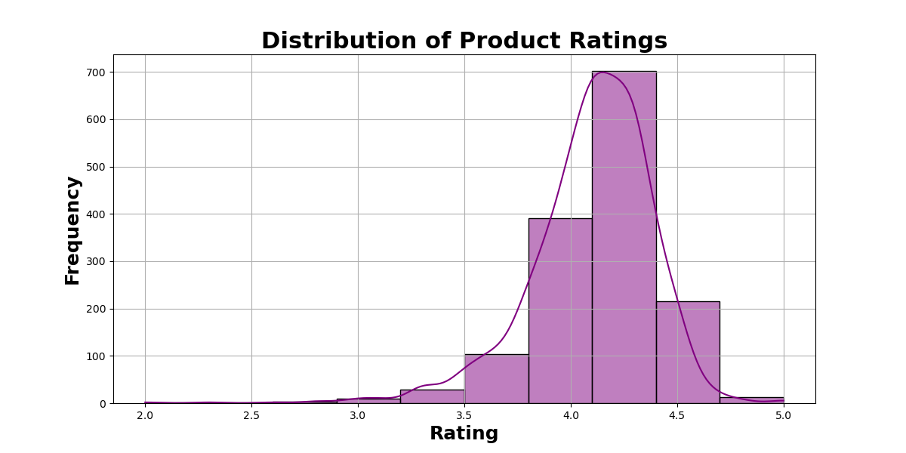
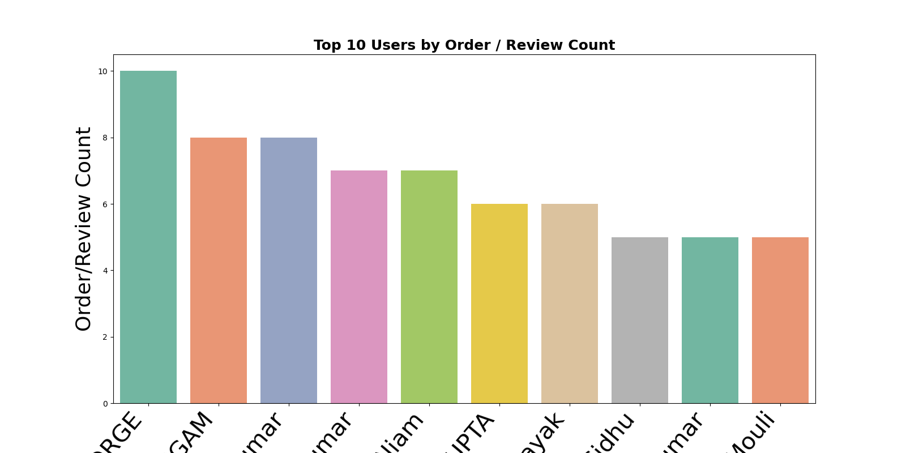
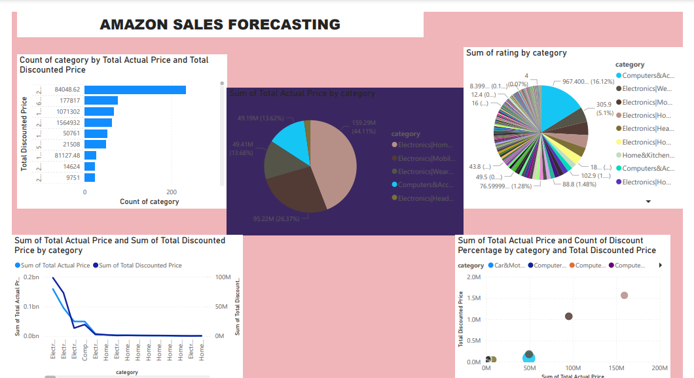

AMAZON SALES FORECASTING
Objectives:
The aim of this project was to develop a predictive model to forecast sales on Amazon based on historical data. By analyzing key features such as product categories, pricing, customer ratings, and reviews, I sought to identify patterns that could help Amazon and its sellers make data-driven decisions to maximize profits and improve customer satisfaction.
Dataset:
The dataset used in this project was sourced from Kaggle and contained a wide range of information, including:
- Product Details: Product ID, product name, category, and pricing (actual and discounted).
- Customer Feedback Customer ratings, rating count, and detailed product reviews.

Amazon Sales Forecasting to show the during train and test in actual and discount prices relationship. scatter plots showing the relationship between actual price and discount price, with a fitted regression line (blue line) predicting the linear relationship between these two variables. , Using Machine learning language to Test set(Test Data Evaluation)
The model assumes a linear relationship between the discount price and the actual price, which is represented by the straight blue line in both plots.
Model Evaluation: If the red dots are close to the blue line, it indicates that the model is making accurate predictions on the test set. However, any points significantly off the line suggest potential prediction errors or outliers. In this plot, we can observe a reasonably strong correlation between actual and discount prices, with some larger deviations as discount prices increase.

The plot shows the model's fit to the training data, where the model is expected to perform well as it was trained on this data.
The plot of the training data shows a strong correlation between discount and actual prices.
The red data points being close to the line suggest that the model is capable of predicting the actual price based on the discount price during training.
The red dots being closer to the blue line suggests a strong correlation between the actual and discount prices during training. In this plot, most red dots are closely aligned with the regression line, confirming that the model learned the relationship well from the training data.

Linear Relationship Between Actual Price and Discounted Price
Observation: This plot likely visualizes how the actual price and discounted price relate to each other, potentially using a scatterplot.
Outliers: Any points far from the trendline might represent products that have an unusually high or low discount, which could be a focal point for understanding unique pricing strategies or promotional offers.
Actionable Insights: You could conclude that the discount pricing strategy appears consistent with the actual price of the products, but further analysis on products with extreme discounts (outliers) might reveal opportunities for deeper insights on pricing anomalies.

Ratings By Category
Observation: This graph shows how product ratings vary across different categories.
Insights:
]Low-rated Category: Categories with lower average ratings might point to potential issues in product quality or misaligned customer expectations. This insight can be used to suggest areas for product improvement or better marketing efforts.

Top 10 users By Review
Observation: This chart likely displays the top 10 users based on the number of reviews they’ve left. This provide valuable insights into user engagement and loyalty also helps identify most active customers, potentially highlighting their impact on sales and brand perception.

In this project, I utilized Power BI to visualize and analyze the Amazon sales dataset, focusing on uncovering key insights that would help guide strategic business decisions. The visualizations below highlight various aspects of sales, discounts, and customer interactions across different product categories, allowing for deeper analysis of the business’s performance. Here’s a breakdown of each visualization and its significance:
BAR CHART: Count of Category by Total Actual Price and Total Discounted Price
Description: This bar chart compares the total actual price and the total discounted price for each product category.
Key Insights:
- Categories such as Electronics and Mobile exhibit the highest total discounted price, indicating they underwent significant promotional efforts.
- The comparison helps identify which categories are generating high sales due to pricing strategies and which categories may require further price optimization.
Emphasis: This visualization highlights the need for price evaluation strategies, especially for categories with substantial discounts. Business leaders can also use this chart to determine the effectiveness of their discount campaigns and whether they are boosting sales or eroding profit margins.
PIE CHART: Sum of Total Actual Price by Category
Description: The pie chart breaks down the total actual sales value contributed by each category
Key Insights:
- Electronics (Mobile) stands out as the highest revenue-generating category, contributing 44.11% of total sales. This suggests a strong market demand for mobile electronics, driving a significant portion of revenue.
- Other categories, such as Home & Kitchen and Wearable Electronics, also make noticeable contributions, albeit smaller.
Emphasis: This pie chart offers a comprehensive view of revenue distribution across categories, identifying the strongest performers. It allows businesses to focus on expanding high-revenue categories while identifying lower-performing ones that may require additional marketing or product development.
PIE CHART: Sum Ratings By Category
Description:This chart visualizes customer engagement by showcasing the total sum of ratings for each category.
Key Insights:
- "Computers & Accessories" dominate in terms of customer ratings, suggesting high customer interaction and satisfaction in this category.
- Categories with fewer ratings may have lower customer engagement, or may not be as popular as others, signaling areas that might need more attention in terms of marketing or product improvement.
Emphasis:Customer ratings can serve as a proxy for customer satisfaction and product popularity. Categories with more ratings could represent opportunities for expansion, while categories with lower ratings might need improvement in terms of product quality or visibility.
LINE AND BAR CHART: Sum of Total Actual Price and Total Discounted Price by Category
Description:This combined line and bar chart compares the total actual price and total discounted price per category.
Key Insights:
- The trend reveals that the actual prices are higher than the discounted prices, which is expected, but certain categories show steeper declines in discounted prices. This indicates that aggressive discounts are applied to particular categories, likely to move inventory quickly.
- Electronics categories, particularly Mobile and Accessories, maintain a strong actual price despite significant discounts, showing a balance between price reductions and sales volume.
Emphasis:This visualization is key to understanding how discounts affect revenue. By identifying categories where heavy discounting occurs, the company can re-evaluate its pricing strategies to strike a better balance between maintaining high sales volumes and ensuring profitability.
SCATTER PLOT: Sum of Total Actual Price and Count of Discount Percentage by Category
Key Insights:
- Categories with higher discount percentages but lower total actual prices suggest the products are heavily discounted to boost sales. These categories might be struggling with lower demand.
- Conversely, categories with high actual prices and low discount percentages suggest premium products that can sustain a higher price point without needing heavy discounts, such as in the Mobile Electronics category.
Emphasis: This plot aids in discount strategy optimization. Businesses can adjust their discounting approaches based on this visualization, ensuring that the discounts are driving sufficient sales without cutting too deeply into profit margins.
Conclusions and Strategic Recommendations
By utilizing Power BI to analyze the Amazon sales dataset, I derived several key insights into the company’s sales, pricing, and customer engagement strategies. Here are the primary takeaways:
- Category Dominance: Electronics and Mobile is the top revenue-generating category, and strategies to maintain or expand this market should be a focus.
- Discount Optimization: Categories with significant discount percentages may need to be reassessed. Products that rely heavily on discounts to drive sales may benefit from improved marketing strategies or product positioning to sustain their pricing power.
- Customer Engagement: High ratings in categories like Computers & Accessories indicate strong customer satisfaction and loyalty. These categories may not require aggressive discounting but should be promoted as premium offerings to maximize profitability.
- Revenue Diversification: The pie chart breakdown shows that a small number of categories contribute the majority of the revenue. This concentration suggests that expanding lower-performing categories could create new revenue streams, reducing reliance on top categories.
This analysis is a part of my Amazon Sales Forecasting Project, showcasing my expertise in data analysis and business intelligence using Power BI. This project is an example of how data-driven decision-making can help businesses optimize their product pricing, discount strategies, and marketing efforts to maximize profits.